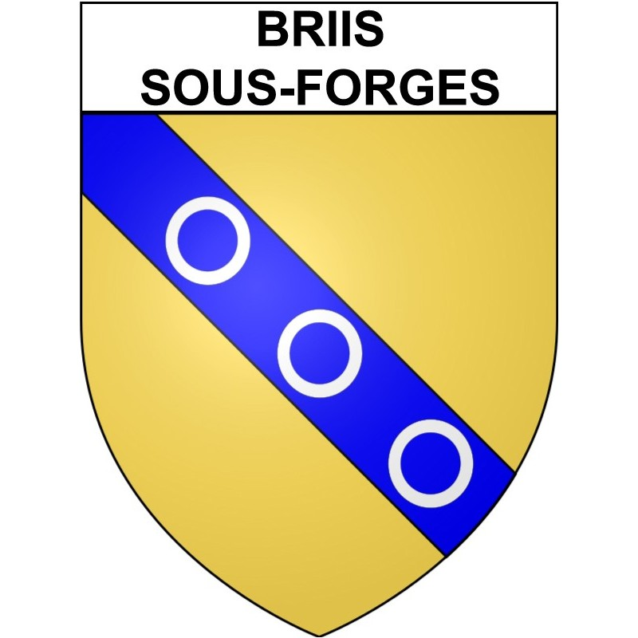

Désembouage à Briis-sous-Forges (91640)

Redonnez puissance et rendement à votre chauffage
Avec les années, les installations de chauffage s’encrassent à cause des boues, du calcaire et des résidus de corrosion. Ces dépôts gênent la circulation de l’eau, réduisent le rendement du système et augmentent la consommation d’énergie. À Briis-sous-Forges, notre entreprise met toute son expertise à votre disposition pour réaliser un désembouage complet, gage de performance, de confort et d’économie sur le long terme.
Pourquoi le désembouage est-il essentiel ?
Dans un circuit de chauffage à eau chaude, la corrosion des métaux et la présence de calcaire créent des boues. Ces dépôts s’accumulent dans les radiateurs, les tuyauteries et la chaudière, provoquant des dysfonctionnements et une baisse d’efficacité.
Les symptômes d’un réseau encrassé sont faciles à repérer :
- Des radiateurs tièdes ou froids sur certaines zones ;
- Des bruits de circulation d’eau dans les tuyauteries ;
- Une chaudière qui consomme davantage sans chauffer mieux ;
- Des variations de température entre les pièces ;
- Un système qui chauffe lentement.
Le désembouage élimine ces impuretés et redonne toute son efficacité au circuit.
Les bénéfices sont immédiats :
- Une chaleur homogène dans tout le logement ;
- Une réduction de la consommation énergétique pouvant atteindre 20 % ;
- Une protection contre les pannes coûteuses ;
- Une durée de vie prolongée de vos équipements.
Il est recommandé d’effectuer un désembouage complet tous les 5 à 7 ans, selon l’état de votre installation.
Une entreprise locale à votre service à Briis-sous-Forges
Depuis plus de dix ans, SPC Santos Plomberie Chauffage intervient dans tout le département de l’Essonne pour assurer l’entretien, la maintenance et le nettoyage des systèmes de chauffage. Notre équipe, basée à proximité, se déplace rapidement à Briis-sous-Forges, ainsi que dans les communes voisines comme Forges-les-Bains, Fontenay-lès-Briis, Courson-Monteloup et Limours.
Notre priorité : garantir à chaque client un chauffage performant, fiable et durable, en alliant qualité, réactivité et professionnalisme.
Nos atouts :
- Une expertise reconnue dans le domaine du chauffage et de la plomberie ;
- Des techniciens qualifiés maîtrisant les dernières technologies ;
- Des produits écologiques respectueux de vos installations ;
- Des interventions rapides et soignées, planifiées selon vos besoins.
Nos prestations de désembouage à Briis-sous-Forges
Nous intervenons sur tous les systèmes de chauffage à eau chaude, qu’ils soient individuels ou collectifs :
- Radiateurs (fonte, acier, aluminium) ;
- Planchers chauffants hydrauliques ;
- Chaudières à gaz, fioul ou à condensation ;
- Pompes à chaleur air/eau et systèmes mixtes.
1. Diagnostic complet de l’installation
Avant toute intervention, nos techniciens réalisent un diagnostic précis du circuit : contrôle du débit, de la pression, de la température et analyse de la qualité de l’eau. Ce bilan permet de déterminer la méthode de nettoyage la plus efficace.
2. Nettoyage complet du réseau
Deux procédés sont utilisés selon l’état de votre installation :
- Le désembouage mécanique, avec une machine à pression contrôlée pour expulser les boues et dépôts ;
- Le désembouage chimique doux, utilisant un produit non corrosif qui dissout les impuretés sans agresser les canalisations.
3. Traitement préventif
Après le nettoyage, nous injectons un inhibiteur de corrosion qui protège durablement le circuit contre la formation de nouvelles boues.
4. Vérification finale et remise en service
Nous testons la circulation de l’eau et la montée en température pour garantir un rendement optimal du chauffage.
Pour qui intervenons-nous à Briis-sous-Forges ?
Nos prestations s’adressent à tous types de clients :
- Les particuliers, pour leurs maisons ou appartements ;
- Les syndics et copropriétés, pour les chaufferies collectives ;
- Les entreprises, pour leurs locaux professionnels ;
- Les collectivités locales, pour les bâtiments publics et administratifs.
Chaque intervention est personnalisée en fonction du type et de la configuration de votre système de chauffage.
Des tarifs transparents et compétitifs
Chez SPC Désembouage Briis-sous-Forges, nous privilégions la transparence et la confiance. Avant toute opération, un devis gratuit et détaillé vous est remis, précisant la méthode, les produits utilisés et le coût total.
Nos tarifs sont calculés pour offrir le meilleur rapport qualité-prix, sans frais cachés. Le désembouage est un investissement durable, qui vous permet de réaliser des économies d’énergie tout en prolongeant la durée de vie de votre installation.
SPC Santos Plomberie Chauffage : une expertise reconnue en Essonne
Fondée en 2010, SPC Santos Plomberie Chauffage s’est imposée comme une entreprise de référence dans le domaine du chauffage et de la plomberie en Essonne. Nous intervenons également dans les départements voisins (Seine-et-Marne, Val-de-Marne et Hauts-de-Seine) pour tous les besoins d’entretien thermique.
Nos techniciens utilisent du matériel professionnel conforme aux normes européennes, garantissant un nettoyage complet, sûr et efficace. Notre philosophie : allier proximité, rigueur et innovation pour vous offrir un service fiable et durable.
Nos engagements qualité
Choisir SPC Désembouage Briis-sous-Forges, c’est bénéficier de :
- Un diagnostic gratuit et personnalisé avant intervention ;
- Des produits écologiques respectueux de votre installation ;
- Une intervention rapide et soignée par des experts ;
- Une garantie de satisfaction sur l’ensemble de nos prestations.
Nous nous engageons à assurer la performance et la longévité de votre système de chauffage, tout en réduisant votre consommation énergétique.
Contactez-nous dès aujourd’hui
Vos radiateurs chauffent mal ? Votre chaudière consomme plus que d’habitude ? Contactez dès maintenant SPC Désembouage Briis-sous-Forges pour un diagnostic gratuit et une intervention rapide dans toute la commune.
📞 Téléphone : 01 69 25 77 54
📍 Adresse : 19 rue Pierre Brossolette, 91700 Sainte Geneviève des Bois
📧 Email : contact@desembouage-91.fr
SPC Désembouage Briis-sous-Forges, votre partenaire local pour un chauffage plus propre, plus performant et plus économique.
Contactez-nous au 01 69 25 77 54